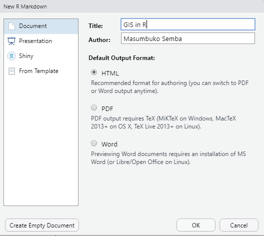
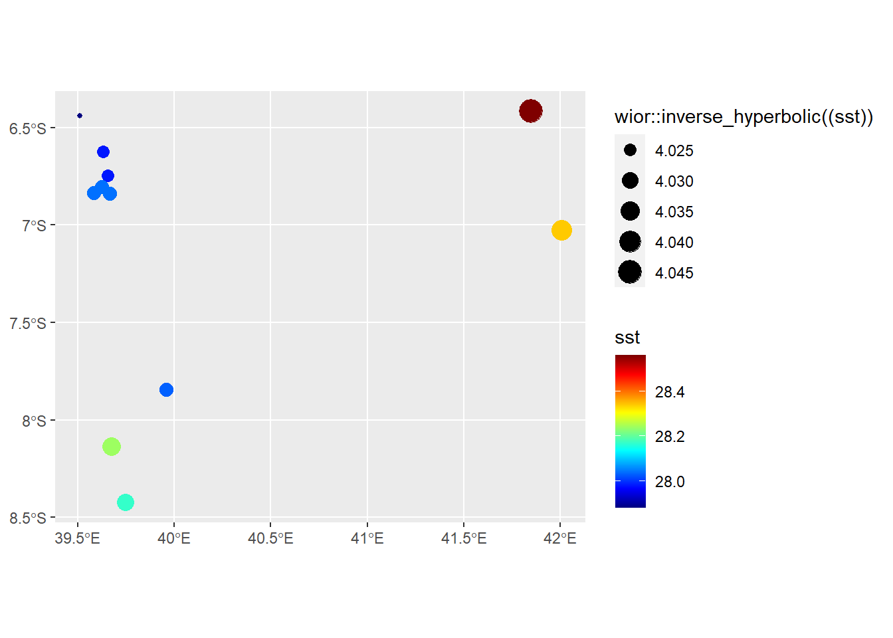
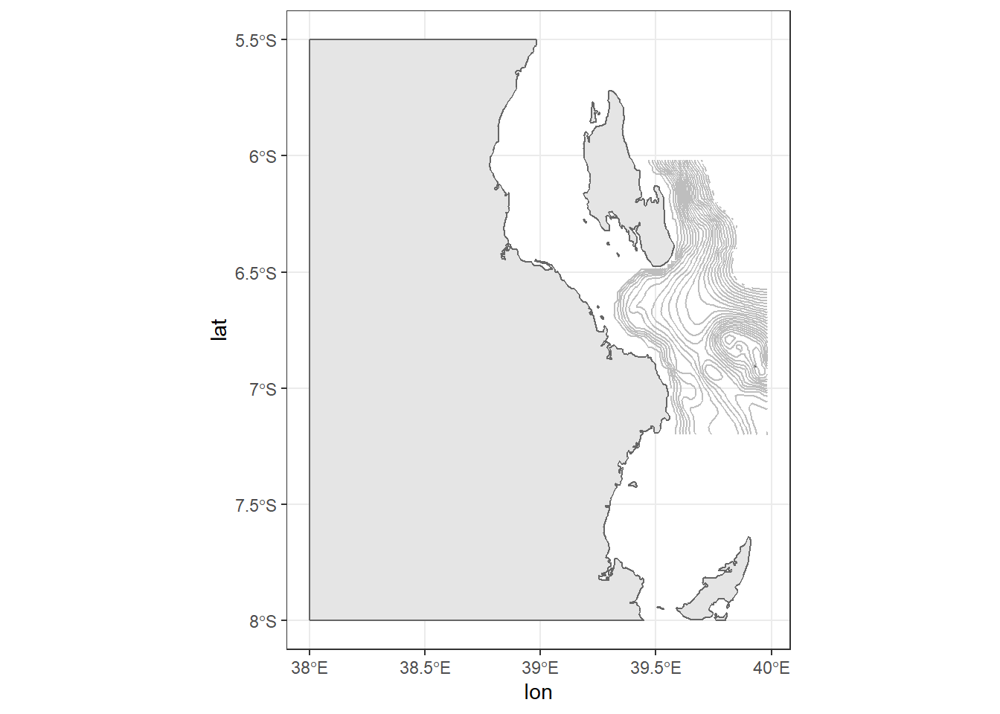
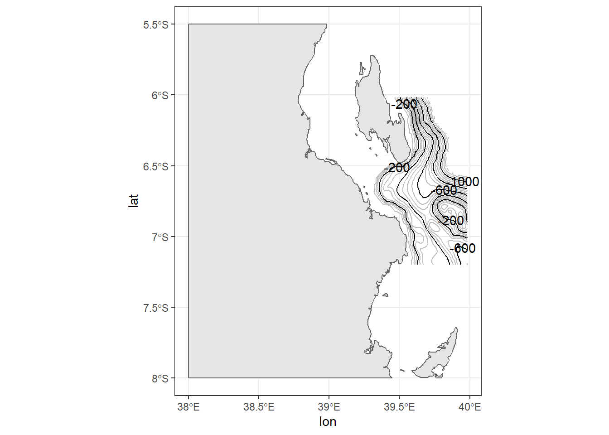
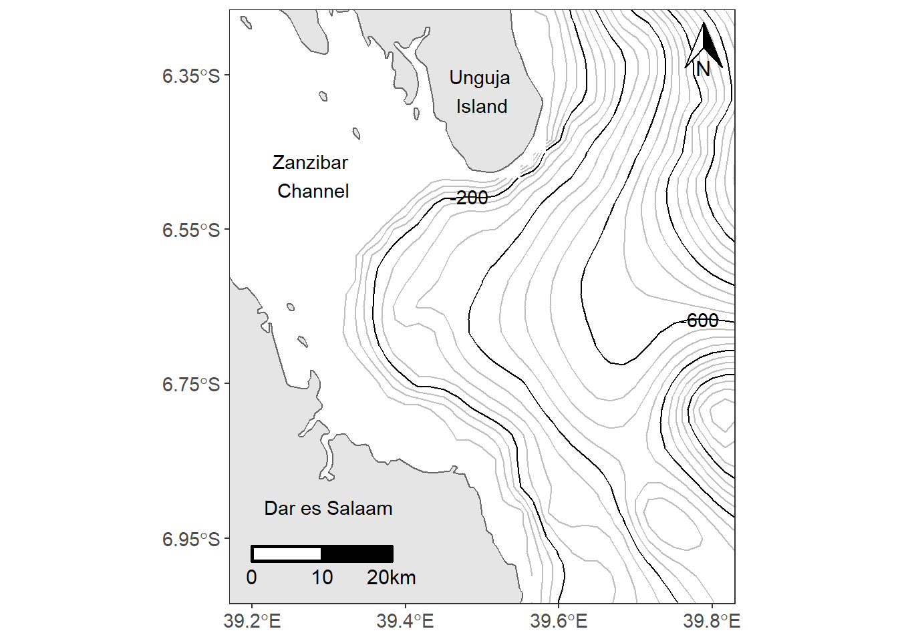
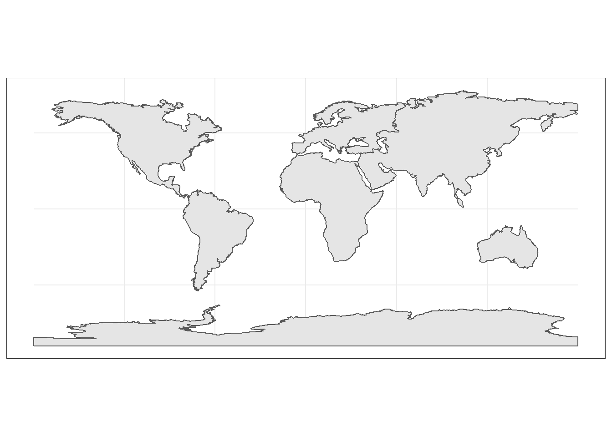
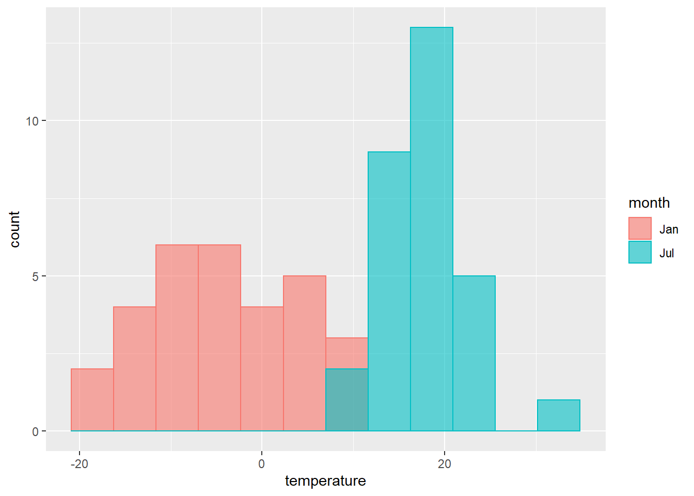
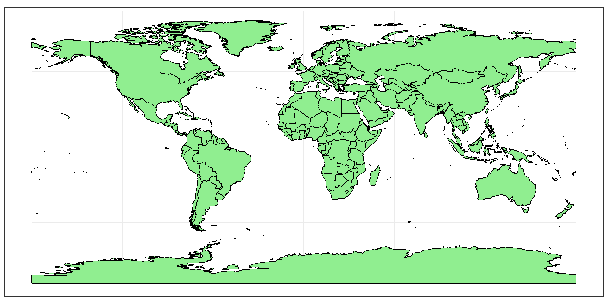

Chapter 13 Appendices
This chapter includes four practicals:
- Practical A: Getting started (associated with Chapter 6)
- Practical B: Working with climate data (associated with Chapter 11 and Chapter 12)
- Practical C: Finding, loading, and cleaning Spatial data (associated with Chapter 12)
- Practical D: Making maps with ggplot2
13.1 Practical A: Getting started
Before we start, make sure that you have opened RStudio and ArcGIS on your computer.
13.1.1 Install necessary packages
The most important packages We will be using for the GIS work are sf, raster, lubridate, oce, ocedata, leaflet, tmap, and tidyverse. To install these and others that we will be using, enter at the R console prompt (or copy-and-paste):
install.packages(
c("sf",
"raster",
"leaflet",
"tidyverse",
"kableExtra",
"leaflet",
"oce",
"pander",
"knitr",
"kableExtra",
"tidycensus",
"ocedata",
"forcats",
"mapedit",
"mapview")
)This should only done once on any user R installation.
13.1.2 Create An Rstudio Project
Create a new RStudio project in a new folder on your desktop named r_gis (File > New Project).
Then choose New Project
Then Define the directory name and browse to specify the location you want folder of the project to live in your machine.
13.1.3 Create an R Markdown file
Steps to create a new R Markdown file are as File > New File > R Markdown...and assign the name as `GIS in R and specify the author name with your name and leave other option as default. We will come to the other parameters later.

Delete most of the content in the rmarkdwon file you just created except the YAML header and the first chunk of setup and save it in your project working directory as r_gis.Rmd.
13.1.4 Create New folders
We can organize our project by having a folder structure that allows us to organize our data, the scripts and output during the process. We can simply create the folder programmatically using a dir.create function, which simply create a folder in your working directory.
Create a new chunk and load the packages we will use using the require() function. We will load some packages we are going to use during this session as the chunk below highlight.
13.2 Practical B: Working with climate data
This practical is composed of three parts. To start with we’re going to load some global raster data into R. In the second part we extract data points (cities and towns) from this data and generate some descriptive statistics and histograms. In the final section we explore interpolation using point data.
13.2.1 Part 1: rasters
So far we’ve only really considered vector data. Within this practical we will explore some raster data sources and processing techniques. If you recall rasters are grids of cell with individual values. There are many, many possible sources to obtain raster data from as it is the data type used for the majority (basically all) of remote sensing data.
13.2.1.1 WorldClim data
We will deal with historical climate data accessed from the worldClim Data website at this link: https://worldclim.org/data/worldclim21.html. This is version 2.1 climate data for 1970-2000 released in January 2020. There are monthly climate data for minimum, mean, and maximum temperature, precipitation, solar radiation, wind speed, water vapor pressure, and for total precipitation. There are also 19 “bioclimatic” variables. The data is available at the four spatial resolutions, between 30 seconds (~1 km2) to 10 minutes (~340 km2). Each download is a “zip” file containing 12 GeoTiff (.tif) files, one for each month of the year (January is 1; December is 12).
- Download the data from: https://worldclim.org/data/worldclim21.html
- Select any variable you want at the 5 minute second resolution3.
- Unzip and move the data to your project folder. Now load the data. We could do this individually….
- Then have a guick look

jan.tb = jan %>%
raster::as.data.frame(xy = TRUE) %>%
as_tibble() %>%
rename(lon = 1, lat = 2, temperature = 3)
jan.tb %>%
ggplot() +
metR::geom_contour_fill(aes(x = lon, y = lat, z = temperature)) +
scale_fill_gradientn(colors = oce::oce.colors9A(120),
breaks = seq(-40,40,10), label = seq(-40,40,10),
guide = guide_colorbar(title = expression(Average~temperature~(degree*C)),
title.theme = element_text(angle = 90),
title.hjust = 0.5,
title.position = "right",barheight = unit(8, "cm"))) 1. A better and more efficient way is to firstly list all the files stored within our directory
We notice that since we opened the file in ArcGIS and allowed the file to create an overview, it simply created other two temporaly files. We need to remove them from our list
[1] "data/raster/wc2.1_10m_tavg/wc2.1_10m_tavg_01.tif"
[2] "data/raster/wc2.1_10m_tavg/wc2.1_10m_tavg_02.tif"
[3] "data/raster/wc2.1_10m_tavg/wc2.1_10m_tavg_03.tif"
[4] "data/raster/wc2.1_10m_tavg/wc2.1_10m_tavg_04.tif"
[5] "data/raster/wc2.1_10m_tavg/wc2.1_10m_tavg_05.tif"
[6] "data/raster/wc2.1_10m_tavg/wc2.1_10m_tavg_06.tif"
[7] "data/raster/wc2.1_10m_tavg/wc2.1_10m_tavg_07.tif"
[8] "data/raster/wc2.1_10m_tavg/wc2.1_10m_tavg_08.tif"
[9] "data/raster/wc2.1_10m_tavg/wc2.1_10m_tavg_09.tif"
[10] "data/raster/wc2.1_10m_tavg/wc2.1_10m_tavg_10.tif"
[11] "data/raster/wc2.1_10m_tavg/wc2.1_10m_tavg_11.tif"
[12] "data/raster/wc2.1_10m_tavg/wc2.1_10m_tavg_12.tif"- Once we have the files in the the list, Then load all of the data straight into a raster stack. A raster stack is a collection of raster layers with the same spatial extent and resolution.
class : RasterStack
dimensions : 1080, 2160, 2332800, 12 (nrow, ncol, ncell, nlayers)
resolution : 0.1666667, 0.1666667 (x, y)
extent : -180, 180, -90, 90 (xmin, xmax, ymin, ymax)
crs : +proj=longlat +datum=WGS84 +no_defs
names : wc2.1_10m_tavg_01, wc2.1_10m_tavg_02, wc2.1_10m_tavg_03, wc2.1_10m_tavg_04, wc2.1_10m_tavg_05, wc2.1_10m_tavg_06, wc2.1_10m_tavg_07, wc2.1_10m_tavg_08, wc2.1_10m_tavg_09, wc2.1_10m_tavg_10, wc2.1_10m_tavg_11, wc2.1_10m_tavg_12
min values : -45.88400, -44.80000, -57.92575, -64.19250, -64.81150, -64.35825, -68.46075, -66.52250, -64.56325, -55.90000, -43.43475, -45.32700
max values : 34.00950, 32.82425, 32.90950, 34.19375, 36.25325, 38.35550, 39.54950, 38.43275, 35.79000, 32.65125, 32.78800, 32.82525 In the raster stack you’ll notice that under dimensions there are 12 layers (nlayers). The stack has loaded the 12 months of average temperature data for us in order.
To access single layers within the stack:
class : RasterLayer
dimensions : 1080, 2160, 2332800 (nrow, ncol, ncell)
resolution : 0.1666667, 0.1666667 (x, y)
extent : -180, 180, -90, 90 (xmin, xmax, ymin, ymax)
crs : +proj=longlat +datum=WGS84 +no_defs
source : E:/bookdown/geoMarine/data/raster/wc2.1_10m_tavg/wc2.1_10m_tavg_01.tif
names : wc2.1_10m_tavg_01
values : -45.884, 34.0095 (min, max)- We can also rename our layers within the stack:
month = seq(lubridate::dmy(010120), lubridate::dmy(311220), by = "month") %>% lubridate::month(abbr = TRUE, label = TRUE)
names(temperature.stacked) = month- Now to get data for just January use our new layer name
class : RasterLayer
dimensions : 1080, 2160, 2332800 (nrow, ncol, ncell)
resolution : 0.1666667, 0.1666667 (x, y)
extent : -180, 180, -90, 90 (xmin, xmax, ymin, ymax)
crs : +proj=longlat +datum=WGS84 +no_defs
source : E:/bookdown/geoMarine/data/raster/wc2.1_10m_tavg/wc2.1_10m_tavg_01.tif
names : Jan
values : -45.884, 34.0095 (min, max)class : RasterLayer
dimensions : 1080, 2160, 2332800 (nrow, ncol, ncell)
resolution : 0.1666667, 0.1666667 (x, y)
extent : -180, 180, -90, 90 (xmin, xmax, ymin, ymax)
crs : +proj=longlat +datum=WGS84 +no_defs
source : E:/bookdown/geoMarine/data/raster/wc2.1_10m_tavg/wc2.1_10m_tavg_01.tif
names : Jan
values : -45.884, 34.0095 (min, max)13.2.1.2 Extract data from a raster
Using a raster stack we can extract data with a single command!! For example let’s make a dataframe of some sample sites — Australian cities/towns.
## create geographical location of the places in the world
locations = data.frame(name = c("Australia","Africa", "South America", "North America", "Europe", "China", "Russia"),
lon = c(129.567317, 26.916542, -58.63894, -102.5173197,9.4532431,89.285466, 91.926973),
lat = c(-23.803969, -2.168066, -18.84251, 47.14847, 49.107177, 38.103829, 63.275941))## Extract the data from the Rasterstack for all points and convert them to data frmae
temperature.locations = temperature.stacked %>%
raster::extract(locations %>% select(lon,lat)) %>%
as.data.frame() %>%
as_tibble()
monthly.temperature.locations = locations %>%
bind_cols(temperature.locations)monthly.temperature.locations %>%
mutate(across(is.numeric, round, 2)) %>%
knitr::kable() %>%
kableExtra::column_spec(column = 1:15,width = "4cm") %>%
kableExtra::add_header_above(c("", "Location" = 2, "Month" = 12))| name | lon | lat | Jan | Feb | Mar | Apr | May | Jun | Jul | Aug | Sep | Oct | Nov | Dec |
|---|---|---|---|---|---|---|---|---|---|---|---|---|---|---|
| Australia | 129.57 | -23.80 | 32.02 | 30.66 | 28.60 | 24.83 | 19.49 | 15.24 | 14.55 | 16.64 | 21.23 | 25.78 | 28.26 | 29.91 |
| Africa | 26.92 | -2.17 | 23.85 | 23.92 | 24.02 | 24.07 | 23.88 | 23.22 | 23.06 | 23.56 | 23.78 | 23.70 | 23.51 | 23.59 |
| South America | -58.64 | -18.84 | 28.73 | 28.15 | 27.97 | 26.66 | 23.94 | 22.91 | 22.92 | 25.01 | 26.85 | 28.57 | 28.65 | 28.74 |
| North America | -102.52 | 47.15 | -11.15 | -7.06 | -1.36 | 6.05 | 12.99 | 18.02 | 21.13 | 20.85 | 14.45 | 7.32 | -2.17 | -8.57 |
| Europe | 9.45 | 49.11 | 0.38 | 1.18 | 4.73 | 7.93 | 12.74 | 15.58 | 17.69 | 17.40 | 13.64 | 8.96 | 4.03 | 1.46 |
| China | 89.29 | 38.10 | -15.34 | -12.36 | -7.24 | -0.74 | 4.57 | 8.56 | 11.16 | 10.62 | 5.62 | -2.10 | -9.24 | -13.86 |
| Russia | 91.93 | 63.28 | -29.19 | -26.59 | -16.59 | -7.17 | 1.26 | 10.52 | 15.27 | 11.37 | 4.40 | -6.89 | -19.32 | -26.05 |
world_countries = st_read("data/shp/world_countries.shp", quiet = TRUE)
world_countries = world_countries %>%
mutate(area = st_area(geometry) %>% as.numeric,
area_km = area/1000000)We then dissolve the countries for each continent to remain with continent alone;
continent = st_read("data/shp/Continents.shp", quiet = TRUE) %>%
st_set_crs(4326) %>%
janitor::clean_names()
continent = continent %>%
arrange(desc(area)) %>%
slice(1:7)
ggplot() +
ggspatial::layer_spatial(data = continent)
continent.names = continent %>%
pull(placename) %>%
as.character()
sample.points = list()
for (i in 2:length(continent.names)){
sample.points[[i]] = continent %>%
filter(placename == continent.names[i]) %>%
st_sample(size = 30, quiet = TRUE) %>%
st_coordinates() %>%
as_tibble() %>%
mutate(continent = continent.names[i]) %>%
rename(lon = 1, lat = 2)
# print(i)
}
sample.points = sample.points %>%
bind_rows()sample.points %>%
ggplot(aes(x = lon, y = lat, color = continent))+
ggspatial::layer_spatial(data = continent)+
geom_point() You notice that there are not points in the Antarctica, we never processed them because of high computation time it take to process because of the shape of this continent.
13.2.1.3 Extract Raster Pixels Values Using Vector Polygons
Often we want to extract values from a raster layer for particular locations - for example, plot locations that we are sampling on the ground. We can extract all pixel values within 20m of our x,y point of interest. These can then be summarized into some value of interest (e.g. mean, maximum, total).
Once we have the points, we can use them to extract the monthly temperature for each continent. To do this in R, we use the extract() function. The extract() function requires:
- The raster that we wish to extract values from,
- The vector layer containing the polygons that we wish to use as a boundary or boundaries,
we can tell it to store the output values in a data frame using df = TRUE. (This is optional, the default is to return a list, NOT a data frame.) .
We will begin by extracting all canopy height pixel values located within our aoi_boundary_HARV polygon which surrounds the tower located at the NEON Harvard Forest field site.
13.2.2 Part 2 descriptive statistics
Descriptive (or summary) statistics provide a summary of our data, often forming the base of quantitiatve analysis leading to inferential statistics which we use to make infereces about our data (e.g. judegements of the probability that the observed difference between two datasets is not by chance)
13.2.2.1 Data preparation
Before we explore the data, we need first to tidy our dataset into a format that is easy for program to analyse and plotting. We need to change the data from the wide form to long form that is tidy.
13.2.2.2 Histogram
A histogram lets us see the frequency of distribution of our data. Make a histogram of Perth’s temperature
temperature.extract.long %>%
filter(continent == "Asia") %>%
ggplot(aes(x = temperature)) +
geom_histogram() Remember what we’re looking at here. The x axis is the temperature and the y is the frequency of occurrence.
Remember what we’re looking at here. The x axis is the temperature and the y is the frequency of occurrence.
temperature.extract.long %>%
filter(continent == "Asia") %>%
ggplot(aes(x = temperature)) +
geom_histogram()+
facet_wrap(~month)+
geom_vline(xintercept = 0, linetype = 3, color = "red")
13.2.2.3 Boxplot
temperature.extract.long %>%
filter(continent == "Europe") %>%
ggplot() +
geom_boxplot(aes(x = month,y = temperature, fill = temperature)) +
scale_x_discrete(limits =month)
temperature.extract.long %>%
filter(continent == "Europe" & month %in% c("Jan", "Jul")) %>%
ggplot()+
geom_histogram(aes(x = temperature, fill = month, color = month), alpha = .6, position = "identity", bins = 12)
13.2.3 Using more data
In the previous section, we simply extracted thirty points for each continent. Sometimes, you may be required to have more samples and you may be interested to extract at the continental level
#### Crop We often work with spatial layers that have different spatial extents. The spatial extent of a shapefile or R spatial object represents the geographic “edge” or location that is the furthest north, south east and west. Thus is represents the overall geographic coverage of the spatial object.
We can use the crop() function to crop a raster to the extent of another spatial object. To do this, we need to specify the raster to be cropped and the spatial object that will be used to crop the raster. R will use the extent of the spatial object as the cropping boundary.
13.2.3.1 Mask
raster::crop() always output the extracted areas as rectangular, however, when you need a raster that has the same geometry of the shapefile, then you need to use raster::mask() function. Unfortunately, the mask trail with NA values that is assigned to the cells outside the geographical extent of the shapefile. To resolve this, you run raster::mask followed with raster::crop to remove NA.
13.2.4 Wind
wind.jan = stars::read_stars("data/raster/wc2.1_10m_wind/wc2.1_10m_wind_01.tif")
ggplot() +
stars::geom_stars(data = wind.jan)+
scale_fill_gradientn(colors = oce::oce.colorsPalette(120),
trans = scales::log10_trans(),na.value = "white",
# breaks = seq(-40,40,10), label = seq(-40,40,10),
guide = guide_colorbar(title = expression(Wind~Speed~(ms^(-1))),
title.theme = element_text(angle = 90),
title.hjust = 0.5,
title.position = "right",barheight = unit(8, "cm")))+
coord_cartesian(expand = FALSE)+
theme(panel.background = element_blank())13.2.5 Precipitation
rain.jan = stars::read_stars("data/raster/wc2.1_10m_prec/wc2.1_10m_prec_01.tif")
# rain.jan = rain.jan %>% wior::inverse_hyperbolic()
ggplot() +
stars::geom_stars(data = rain.jan)+
scale_fill_gradientn(colors = oce::oce.colorsPalette(120),
trans = scales::log10_trans(),
na.value = "white",
# breaks = seq(-40,40,10), label = seq(-40,40,10),
guide = guide_colorbar(title = expression(Precipitation(ml~year^{-1})),
title.theme = element_text(angle = 90),
title.hjust = 0.5,
title.position = "right",barheight = unit(8, "cm")))+
coord_cartesian(expand = FALSE)+
theme(panel.background = element_blank())13.2.6 Advanced analysis
Are you already competent with raster analysis and R, then have a go at completing this task in the practical session. Within the practical we’ve loaded one and created one raster layer. Undertake some comparative analysis to determine spatial (and temporal if appropraite) differences between the rasters here and any others you may wish to create (e.g. from other interpolation methods). Try to identify where the varaitions are and explain why they are occuring. You could assume that one raster is the ‘gold standard’ meaning it’s beleived to be fully correct and compare others to it.
Note: take stars, cubelyr and dbplyr package to appendix
13.2.7 stars package
Package stars provides infrastructure for data cubes, array data with labeled dimensions, with emphasis on arrays where some of the dimensions relate to time and/or space.
Spatial data cubes are arrays with one or more spatial dimensions. Raster data cubes have at least two spatial dimensions that form the raster tesselation. Vector data cubes have at least one spatial dimension that may for instance reflect a polygon tesselation, or a set of point locations. Conversions between the two (rasterization, polygonization) are provided. Vector data are represented by simple feature geometries (packages sf). Tidyverse methods are provided.
jan = files.clean[1] %>% stars::read_stars()
ggplot()+
stars::geom_stars(data = jan) +
scale_fill_gradientn(colors = oce::oce.colors9A(120), na.value = "white",
breaks = seq(-40,40,10), label = seq(-40,40,10),
guide = guide_colorbar(title = expression(Average~temperature~(degree*C)),
title.theme = element_text(angle = 90),
title.hjust = 0.5,
title.position = "right",barheight = unit(8, "cm")))+
coord_cartesian(expand = FALSE)+
theme(panel.background = element_blank())13.2.8 dplyr package
13.2.9 cubelyr
13.3 Practical C: Finding, loading, and cleaning Spatial data
One of the benefits of R is its large ecosystem of packages developed and maintained by individuals and teams, and available to the general public via CRAN. The downside of this, however, is that it is sometimes difficult for even experienced coders to determine which package is the best place to start when learning a new skill.
Map data (aka geospatial data or Geographic Information System data or GIS data) is no exception to this rule, and is, in fact, particularly intimidating to the uninitiated.
This is for two reasons: developers have created (1) different ways of storing and representing GIS data and (2) multiple, similar packages for each type of GIS data representation.
In the tutorials in this series, we will introduce GIS data visualization in R using the simple features standard, which has become increasingly popular in recent years and which has the smallest learning curve for those who are already comfortable with data frames and the principles of the “tidyverse.” The simple features approach works well for many common map-making applications, including drawing regions (e.g., states) or points (e.g., cities) and coloring them to create an analytical insight (e.g., shading by population density).
In order to manipulate and visualize data, we will rely primarily on three geospatial packages: sf, ggplot2, and leaflet. You may find that other packages assist greatly with collecting data (e.g., tidycensus for U.S. Census data) or improving the aesthitics of your map (e.g., ggspatial to add a map scale).
13.3.1 Thinking about map data the way R does
Many GIS programs (ArcGIS, QGIS, etc.) make it extraordinarily easy for users to create maps by loading a file with a geographic identifier and data to plot. They are designed to simply drag and drop a layers of shapefiles onto a map and automatically draw the appropriate shapes. Then, you can drag and drop a field called “population density” or “GDP per capita” onto the map, and the shapes automatically color appropriately. These “drag and drop” GIS programs do a lot of work behind the scenes to translate your geographic identifier into a geometric shape and your fields into colorful metrics.
In R, we have to do this work ourselves. R has no innate knowledge of what we want to graph; we have to provide every detail. This means we need to pass R the information it needs in order to, say, draw the shape of Africa or draw a line representing major roads. R needs to be told the 4 coordinates defining a rectangle; R needs to be told the hundreds of points defining a rectangle-ish shape like Africa. If we want to fill Africa with a color, we need to explicitly tell R how to do so.
The manual nature of GIS in R can cause some headaches, as we need to hunt down all of the information in order to provide it to R to graph. Once you have the desired information, however, you will find that the manual nature of R’s graphing allows significantly more flexibility than “drag and drop” programs allow. We are not constrained by the type of information pre-loaded into the program, by the number of shapes we can draw at once, by the color palletes provided, or by any other factor. We have complete flexibility.
If you want to draw state borders (polygons), county borders (more polygons), major highways (lines), and highway rest stops (points), add each of them as an individual layer to the same plot, and color them as you please. There are no constraints when visualizing geospatial data in R.
This post will focus on how to find, import, and clean geospatial data. The actual graphing will come in Part 2 (static maps with ggplot2) and Part 3 (interactive maps with leaflet).
13.3.2 A brief introduction to simple features data in R
Out in the wild, map data most frequntly comes as either geoJSON files (.geojson) or Shapefiles (.shp). These files will, at the very minimum, contain information about the geometry of each object to be drawn, such as instructions to draw a point in a certain location or to draw a polygon with certain dimensions. The raw file may, however, also contain any amount of additional information, such as a name for the object, or summary statistics (GDP per capita, total population, etc.).
Regardless of whether the data is geoJSON or a Shapefile, and regardless of how much additional data the file has, you can use one convenient function from the sf package to import the raw data into R as a simple features object. The function is st_read() and you parse the argument like the path of the shapefile in your working directory.
Let’s us explore a simple feature that we just imported
Simple feature collection with 59 features and 7 fields
geometry type: MULTIPOLYGON
dimension: XY
bbox: xmin: -25.35875 ymin: -34.83983 xmax: 57.80085 ymax: 37.34962
geographic CRS: WGS 84
First 10 features:
COUNT CNTRY_NAME FIPS_CNTRY LAND_AREA_ REGIONA EMPTY
1 34 Angola AO 124670 <NA> 0
2 114 Burundi BY 2783 <NA> 0
3 77 Benin BN 11262 <NA> 0
4 301 Burkina Faso UV 27400 <NA> 0
5 25 Botswana BC 58173 <NA> 0
6 51 Central African Republic CT 62298 <NA> 0
7 51 Cameroon CM 47544 <NA> 0
8 186 Ivory Coast IV 32246 <NA> 0
9 46 Congo CF 34200 <NA> 0
10 15 Cape Verde CV 403 <NA> 0
EMPTY2 geometry
1 0 MULTIPOLYGON (((12.84118 -6...
2 0 MULTIPOLYGON (((29.05021 -2...
3 0 MULTIPOLYGON (((3.849006 10...
4 0 MULTIPOLYGON (((-5.272945 1...
5 0 MULTIPOLYGON (((23.14635 -1...
6 0 MULTIPOLYGON (((22.03557 4....
7 0 MULTIPOLYGON (((9.640797 3....
8 0 MULTIPOLYGON (((-6.091862 4...
9 0 MULTIPOLYGON (((16.45276 2....
10 0 MULTIPOLYGON (((-24.64849 1...The object provide summary, which are;
- We have 59 features and four fields. Each row (feature) represent individual country in Africa and Each column is a field with (potentially) useful information about the feature. Note that the geometry column is not considered a field
- We are told this is a collection of multi–polygons, as opposed to points, lines, etc.
- We are told the bounding box for our data (the most western/eastern longitudes and northern/southern latitudes)
- We are told the Coordinate Reference System (CRS), which in this case is “WGS 84.” CRSs are cartographers’ ways of telling each other what system they used for describing points on the earth. Cartographers need to pick an equation for an ellipsoid to approximate earth’s shape since it’s slightly pear-shaped. Cartographers also need to determine a set of reference markers–known as a datum–to use to set coordinates, as earth’s tectonic plates shift ever so slightly over time. Togehether, the ellipsoid and datum become a CRS.
- And the last information is a column called
geometry. This column contains everything that R will need to draw boundary of each country in Africa.
13.3.3 Finding data
Simple features data in R will always look similar to the example above. You will have some metadata describing the type of geometry, the CRS, and so on; a “geometry” column; and optionally some fields of additional data. The trouble comes in trying to find the data you need–both the geometry and the proper additional fields–and getting them together into the same object in R.
Fortunate, the package rnaturalearth, which is a well-supported part of the rOpenSci project, provides easy access to global data. We can import directly as a simple features object. Here’s a quick look at how to import all the countries in Asia.
Simple feature collection with 51 features and 63 fields
geometry type: MULTIPOLYGON
dimension: XY
bbox: xmin: -17.62504 ymin: -34.81917 xmax: 51.13387 ymax: 37.34999
CRS: +proj=longlat +datum=WGS84 +no_defs +ellps=WGS84 +towgs84=0,0,0
First 10 features:
scalerank featurecla labelrank sovereignt
1 1 Admin-0 country 3 Angola
11 1 Admin-0 country 6 Burundi
13 1 Admin-0 country 5 Benin
14 1 Admin-0 country 3 Burkina Faso
25 1 Admin-0 country 4 Botswana
26 1 Admin-0 country 4 Central African Republic
31 1 Admin-0 country 3 Ivory Coast
32 1 Admin-0 country 3 Cameroon
33 1 Admin-0 country 2 Democratic Republic of the Congo
34 1 Admin-0 country 4 Republic of Congo
sov_a3 adm0_dif level type
1 AGO 0 2 Sovereign country
11 BDI 0 2 Sovereign country
13 BEN 0 2 Sovereign country
14 BFA 0 2 Sovereign country
25 BWA 0 2 Sovereign country
26 CAF 0 2 Sovereign country
31 CIV 0 2 Sovereign country
32 CMR 0 2 Sovereign country
33 COD 0 2 Sovereign country
34 COG 0 2 Sovereign country
admin adm0_a3 geou_dif
1 Angola AGO 0
11 Burundi BDI 0
13 Benin BEN 0
14 Burkina Faso BFA 0
25 Botswana BWA 0
26 Central African Republic CAF 0
31 Ivory Coast CIV 0
32 Cameroon CMR 0
33 Democratic Republic of the Congo COD 0
34 Republic of Congo COG 0
geounit gu_a3 su_dif
1 Angola AGO 0
11 Burundi BDI 0
13 Benin BEN 0
14 Burkina Faso BFA 0
25 Botswana BWA 0
26 Central African Republic CAF 0
31 Ivory Coast CIV 0
32 Cameroon CMR 0
33 Democratic Republic of the Congo COD 0
34 Republic of Congo COG 0
subunit su_a3 brk_diff name
1 Angola AGO 0 Angola
11 Burundi BDI 0 Burundi
13 Benin BEN 0 Benin
14 Burkina Faso BFA 0 Burkina Faso
25 Botswana BWA 0 Botswana
26 Central African Republic CAF 0 Central African Rep.
31 Ivory Coast CIV 0 Côte d'Ivoire
32 Cameroon CMR 0 Cameroon
33 Democratic Republic of the Congo COD 0 Dem. Rep. Congo
34 Republic of Congo COG 0 Congo
name_long brk_a3
1 Angola AGO
11 Burundi BDI
13 Benin BEN
14 Burkina Faso BFA
25 Botswana BWA
26 Central African Republic CAF
31 Côte d'Ivoire CIV
32 Cameroon CMR
33 Democratic Republic of the Congo COD
34 Republic of Congo COG
brk_name brk_group abbrev postal
1 Angola <NA> Ang. AO
11 Burundi <NA> Bur. BI
13 Benin <NA> Benin BJ
14 Burkina Faso <NA> B.F. BF
25 Botswana <NA> Bwa. BW
26 Central African Rep. <NA> C.A.R. CF
31 Côte d'Ivoire <NA> I.C. CI
32 Cameroon <NA> Cam. CM
33 Democratic Republic of the Congo <NA> D.R.C. DRC
34 Republic of Congo <NA> Rep. Congo CG
formal_en formal_fr note_adm0
1 People's Republic of Angola <NA> <NA>
11 Republic of Burundi <NA> <NA>
13 Republic of Benin <NA> <NA>
14 Burkina Faso <NA> <NA>
25 Republic of Botswana <NA> <NA>
26 Central African Republic <NA> <NA>
31 Republic of Ivory Coast Republic of Cote D'Ivoire <NA>
32 Republic of Cameroon <NA> <NA>
33 Democratic Republic of the Congo <NA> <NA>
34 Republic of Congo <NA> <NA>
note_brk name_sort name_alt mapcolor7 mapcolor8
1 <NA> Angola <NA> 3 2
11 <NA> Burundi <NA> 2 2
13 <NA> Benin <NA> 1 2
14 <NA> Burkina Faso <NA> 2 1
25 <NA> Botswana <NA> 6 5
26 <NA> Central African Republic <NA> 5 6
31 <NA> Côte d'Ivoire <NA> 4 6
32 <NA> Cameroon <NA> 1 4
33 <NA> Congo, Dem. Rep. <NA> 4 4
34 <NA> Congo, Rep. <NA> 2 1
mapcolor9 mapcolor13 pop_est gdp_md_est pop_year lastcensus gdp_year
1 6 1 12799293 110300 NA 1970 NA
11 5 8 8988091 3102 NA 2008 NA
13 2 12 8791832 12830 NA 2002 NA
14 5 11 15746232 17820 NA 2006 NA
25 7 3 1990876 27060 NA 2011 NA
26 6 9 4511488 3198 NA 2003 NA
31 3 3 20617068 33850 NA 1998 NA
32 1 3 18879301 42750 NA 2005 NA
33 4 7 68692542 20640 NA 1984 NA
34 3 10 4012809 15350 NA 2007 NA
economy income_grp wikipedia fips_10
1 7. Least developed region 3. Upper middle income NA <NA>
11 7. Least developed region 5. Low income NA <NA>
13 7. Least developed region 5. Low income NA <NA>
14 7. Least developed region 5. Low income NA <NA>
25 6. Developing region 3. Upper middle income NA <NA>
26 7. Least developed region 5. Low income NA <NA>
31 6. Developing region 4. Lower middle income NA <NA>
32 6. Developing region 4. Lower middle income NA <NA>
33 7. Least developed region 5. Low income NA <NA>
34 6. Developing region 4. Lower middle income NA <NA>
iso_a2 iso_a3 iso_n3 un_a3 wb_a2 wb_a3 woe_id adm0_a3_is adm0_a3_us
1 AO AGO 024 024 AO AGO NA AGO AGO
11 BI BDI 108 108 BI BDI NA BDI BDI
13 BJ BEN 204 204 BJ BEN NA BEN BEN
14 BF BFA 854 854 BF BFA NA BFA BFA
25 BW BWA 072 072 BW BWA NA BWA BWA
26 CF CAF 140 140 CF CAF NA CAF CAF
31 CI CIV 384 384 CI CIV NA CIV CIV
32 CM CMR 120 120 CM CMR NA CMR CMR
33 CD COD 180 180 ZR ZAR NA COD COD
34 CG COG 178 178 CG COG NA COG COG
adm0_a3_un adm0_a3_wb continent region_un subregion
1 NA NA Africa Africa Middle Africa
11 NA NA Africa Africa Eastern Africa
13 NA NA Africa Africa Western Africa
14 NA NA Africa Africa Western Africa
25 NA NA Africa Africa Southern Africa
26 NA NA Africa Africa Middle Africa
31 NA NA Africa Africa Western Africa
32 NA NA Africa Africa Middle Africa
33 NA NA Africa Africa Middle Africa
34 NA NA Africa Africa Middle Africa
region_wb name_len long_len abbrev_len tiny homepart
1 Sub-Saharan Africa 6 6 4 NA 1
11 Sub-Saharan Africa 7 7 4 NA 1
13 Sub-Saharan Africa 5 5 5 NA 1
14 Sub-Saharan Africa 12 12 4 NA 1
25 Sub-Saharan Africa 8 8 4 NA 1
26 Sub-Saharan Africa 20 24 6 NA 1
31 Sub-Saharan Africa 13 13 4 NA 1
32 Sub-Saharan Africa 8 8 4 NA 1
33 Sub-Saharan Africa 15 32 6 NA 1
34 Sub-Saharan Africa 5 17 10 NA 1
geometry
1 MULTIPOLYGON (((16.32653 -5...
11 MULTIPOLYGON (((29.34 -4.49...
13 MULTIPOLYGON (((2.691702 6....
14 MULTIPOLYGON (((-2.827496 9...
25 MULTIPOLYGON (((25.64916 -1...
26 MULTIPOLYGON (((15.27946 7....
31 MULTIPOLYGON (((-2.856125 4...
32 MULTIPOLYGON (((13.07582 2....
33 MULTIPOLYGON (((30.83386 3....
34 MULTIPOLYGON (((12.99552 -4...Figure 13.1: Basim map of countries in Africa. Source:rnaturalearth R package
13.3.4 Finding non-geospatial data
Chances are that you are coming to a geospatial mapping project with a particular dataset in mind. Perhaps you want to explore the GDP in Africa. To do this, we will need to find the Global Domestic Product data for each country. The World Bank offers that data in their website as table. Unfortunately, the website of World Bank is not always intuitive to navigate, as the data live in many different tables from different goverment surveys. Fortunately, R has a wbstats package that make life easy to query the World Bank database on the indicator of interest.
13.3.5 Combining spatial data with non-spatial data
Now we have our spatial Africa countries data and the non–spatial GDP data in tabular form. How in the world do we plot this? Four simple steps to prepare your data for graphing.
- Import all data (already completed above)
- Clean your geospatial data frame
- Combine non-spatial data into a single, clean data frame
- Merge your two data frames together
Rows: 59
Columns: 8
$ COUNT <dbl> 34, 114, 77, 301, 25, 51, 51, 186, 46, 15, 8, 48, ...
$ CNTRY_NAME <fct> "Angola", "Burundi", "Benin", "Burkina Faso", "Bot...
$ FIPS_CNTRY <fct> AO, BY, BN, UV, BC, CT, CM, IV, CF, CV, DJ, AG, EG...
$ LAND_AREA_ <dbl> 124670, 2783, 11262, 27400, 58173, 62298, 47544, 3...
$ REGIONA <fct> NA, NA, NA, NA, NA, NA, NA, NA, NA, NA, NA, NA, NA...
$ EMPTY <dbl> 0, 0, 0, 0, 0, 0, 0, 0, 0, 0, 0, 0, 0, 0, 0, 0, 0,...
$ EMPTY2 <dbl> 0, 0, 0, 0, 0, 0, 0, 0, 0, 0, 0, 0, 0, 0, 0, 0, 0,...
$ geometry <MULTIPOLYGON [°]> MULTIPOLYGON (((12.84118 -6..., MULTI...Rows: 217
Columns: 7
$ iso2c <chr> "AW", "AF", "AO", "AL", "AD", "AE", "AR", "AM", "A...
$ iso3c <chr> "ABW", "AFG", "AGO", "ALB", "AND", "ARE", "ARG", "...
$ country <chr> "Aruba", "Afghanistan", "Angola", "Albania", "Ando...
$ date <dbl> 2016, 2016, 2016, 2016, 2016, 2016, 2016, 2016, 20...
$ gdp_capita <dbl> 28281.3505, 509.2187, 3506.0729, 4124.0557, 37474....
$ life_exp <dbl> 75.86800, 63.76300, 59.92500, 78.19400, NA, 77.470...
$ pop <dbl> 104872, 35383128, 28842484, 2876101, 77297, 936098...We notice that, the spatial africa simple feature and non–spatial GDP data have one common variable—country name—thought labeled different. We can use this columns as key to combine the two dataset. Before we do that, we have to clean and rename those columns to a common word—country
africa = africa %>%
select(country = CNTRY_NAME, country_code = FIPS_CNTRY)
wb.data = wb.data %>%
rename(country_code = iso2c)A dplyr package has several functions for combining spatial and non-spatial data. Since we need to retain matching dataset from the shapefile, we use left_join() function and combine using the column country, which is found in both dataset. The left_join function will keep all rows from the spatial dataset and fill in NA for missing non-spatial rows.
Simple feature collection with 59 features and 8 fields
geometry type: MULTIPOLYGON
dimension: XY
bbox: xmin: -25.35875 ymin: -34.83983 xmax: 57.80085 ymax: 37.34962
geographic CRS: WGS 84
First 10 features:
country country_code.x country_code.y iso3c date
1 Angola AO AO AGO 2016
2 Burundi BY BI BDI 2016
3 Benin BN BJ BEN 2016
4 Burkina Faso UV BF BFA 2016
5 Botswana BC BW BWA 2016
6 Central African Republic CT CF CAF 2016
7 Cameroon CM CM CMR 2016
8 Ivory Coast IV <NA> <NA> NA
9 Congo CF <NA> <NA> NA
10 Cape Verde CV <NA> <NA> NA
gdp_capita life_exp pop geometry
1 3506.0729 59.925 28842484 MULTIPOLYGON (((12.84118 -6...
2 282.1931 60.528 10487998 MULTIPOLYGON (((29.05021 -2...
3 1087.2878 60.885 10872067 MULTIPOLYGON (((3.849006 10...
4 688.2497 60.354 18646378 MULTIPOLYGON (((-5.272945 1...
5 7243.8703 68.178 2159944 MULTIPOLYGON (((23.14635 -1...
6 402.1913 51.593 4537687 MULTIPOLYGON (((22.03557 4....
7 1364.3301 58.063 23926539 MULTIPOLYGON (((9.640797 3....
8 NA NA NA MULTIPOLYGON (((-6.091862 4...
9 NA NA NA MULTIPOLYGON (((16.45276 2....
10 NA NA NA MULTIPOLYGON (((-24.64849 1...Once we have combined the non-spatial data into the spatial, we are now ready to map the distribution of GDP across Africa. We use the ggplot package to map this distribution as shown in the chunk below and the figure thereafter
ggplot(data = africa.gdp, aes(fill = gdp_capita)) +
geom_sf()+
scale_fill_viridis_c()+
labs(fill = NULL,
# title = "Gross Domestic Product for 2016",
caption = "Source World Bank national accounts data, and OECD National Accounts data files.")Figure 13.2: The Africa’s countries Gross Domestic Product for 2016
13.3.6 Conclusion
To conclude, we have now seen how to find geospatial data and import it into R as a simple features object. We have seen how to find World Bank data or other non-spatial data and import it into R. We have seen how to tidy both geospatial and non-spatial data and join them as a single dataset in preparation for visualization. Finally, we have had a brief preview of how to plot using ggplot2. Visualization was not a focus of this post, but how can we write a whole post on maps without showing you a single map!
13.4 Practical D: Making maps with ggplot2
To draw static maps in R, we will use ggplot2, which is not only the standard package for drawing traditional bar plots, line plots, historgrams, and other standard visualizations of discrete or continuous data, but is also the standard package for drawing maps. A few other packages are excellent alternatives, including sf and maps. We prefer ggplot2 because it has a consistent grammar of graphics between its various applications and offers a robust set of geospatial graphing functions.
Let’s take a moment to refresh ourselves on ggplot2’s functionality. To make a plot, you need three steps: (1) initate the plot, (2) add as many data layers as you want, and (3) adjust plot aesthetics, including scales, titles, and footnotes.
To (1) initiate the plot, we first call ggplot(), and to (2) add data layers, we next call geom_sf() once for each layer. In ggplot2, functions inherit from functions called higher up. Thus, if we call ggplot(data = neighborhoods), we do not need to subsequently specify geom_sf(data = neighborhoods), as the data argument is inherited in geom_sf(). The same goes for aesthetics. If we specify ggplot(data = neighborhoods, aes(fill = FILL_GROUP)), the subsequent geom_sf() call will already know how we want to color our plot. The behavior of inheriting aesthetics is convenient for drawing graphs that only use one dataset, which is most common in non-geospatial visualiation. A line plot might call both geom_line() and geom_point() and want both the lines and points to inherit the same dataset. Since maps frequently have many layers from different sources, we will elect to specify our data and aesthetics within the geom_sf() calls and not in the ggplot() calls.
Finally, to (3) adjust overall aesthictics, we will use a range of functions, such as the theme_* family of functions, the scale_fill_* family of functions, and the coord_sf() function. Before we get there, we need to load the package we are going to use and also prepare the data.
Load package
13.4.1 Import and clean the datasets
The code below are used to load and clean the dataset we will be using in this assignment. The first dataset is the shapefile of Africa’s countries. This dataset is a polygon and will form a basemap for layering on additional features while making a map. The second dataset is also the mangrove, which is also a polygon containing mangrove forest locations along the coastal areas of Tanzania mainland and Zanzibar. The third dataset—stations.names contains points representing locations of sampling in the Rufiji delta.
#read Africa continental shapefile that we will use throught the munuscript as basemap dataset for maps
africa = read_sf("E:/Data Manipulation/nyamisi/regional/africa.shp")
# clean the file
tz = africa %>%
select(-c(FIPS_CNTRY, REGIONA, EMPTY, EMPTY2)) %>%
filter(CNTRY_NAME == "Tanzania")
mangrove = st_read("e:/GIS/Projects/MASTER/tansea/tza_mangroves_50k.shp", quiet = TRUE)
coral = st_read("e:/GIS/Projects/MASTER/tansea/tza_coral_reefs_50k.shp", quiet = TRUE)
stations = st_read("e:/Data Manipulation/maps/files/mindu_stations.shp", quiet = TRUE)
station.names = stations %>%
st_coordinates() %>%
as_tibble() %>%
rename(lon = 1, lat = 2) %>%
bind_cols(st_drop_geometry(stations))
names.df = st_read("e:/Data Manipulation/maps/files/mindu_stations_names.shp", quiet = TRUE) %>%
wior::point_tb()And then make a simple plot with just our two data layers.
ggplot() +
geom_sf(data = tz, col = NA, fill = "#DCDDDE", size = .2)+
geom_sf(data = mangrove, fill = "#9D9D9E", col = NA)+
coord_sf(xlim = c(39.22,39.62), ylim = c(-8.25,-7.74), crs = 4326)+
theme_bw()%+%
theme(panel.background = element_rect(fill = "#FFFFFF"),
axis.text = element_text(colour = "black", size = 10)) +
scale_x_continuous(breaks = seq(39.27, 39.57, length.out = 4), position = "top") +
scale_y_continuous(breaks = seq(-8.2,-7.75, length.out = 6))13.4.2 Add highlights and annotations
I want to highlight and annotate my map. Since the highlight rule need to distinguish land from mangroves and water, we need to add and specify color for each particular component. First we use fill argument to define the land color to #DCDDDE and mangrove #9D9D9E. We also add the label text using ggrepel::geom_text_repel() using the aes(label = names) to specify the text and other parameters to adjust how it appears on the plot.
map = ggplot() +
geom_sf(data = tz, col = NA, fill = "#DCDDDE", size = .2)+
geom_sf(data = mangrove, fill = "#9D9D9E", col = NA)+
geom_point(data = names.df, aes(x = lon, y = lat), size = 3)+
ggrepel::geom_text_repel(data = names.df, aes(x = lon, y = lat, label = names),
point.padding = .25, size = 3.5, nudge_x = 0.025)+
coord_sf(xlim = c(39.22,39.62), ylim = c(-8.25,-7.74), crs = 4326)+
theme_bw()%+%
theme(panel.background = element_rect(fill = "#FFFFFF"),
axis.title = element_blank(),
axis.text = element_text(colour = "black", size = 10)) +
scale_x_continuous(breaks = seq(39.27, 39.57, length.out = 4), position = "top") +
scale_y_continuous(breaks = seq(-8.2,-7.75, length.out = 6)) +
ggspatial::annotation_north_arrow(location = "tr", width = unit(.5, "cm"), height = unit(.7, "cm"))+
ggspatial::annotation_scale(location = "br")
map13.4.3 inset map
An inset map is a smaller map featured on the same page as the main map. Traditionally, inset maps are shown at a larger scale (smaller area) than the main map. Often, an inset map is used as a locator map that shows the area of the main map in a broader, more familiar geographical frame of reference.
require(tmap)
data("World")
africa = World %>%
st_transform(4326) %>%
filter(continent == "Africa")
extent = data.frame(lon = c(39.0, 39.8, 39.8, 39.0, 39.0),
lat = c(-8.2,-8.2,-7.5,-7.5,-8.2))
inset = africa %>%
ggplot() +
geom_sf()+
geom_path(data = extent, aes(x = lon, y = lat),
col = "black", size = 1.05, lineend = "square", linejoin = "mitre")+
coord_sf(xlim = c(30.1,50), ylim = c(-24.0,5))+
theme_bw()+
theme(panel.grid = element_blank(),
axis.text = element_blank(),
axis.title = element_blank(),
axis.ticks = element_blank(),
plot.background = element_blank(),
panel.background = element_rect(fill = "white"))
inset
then we combine the main map and an inset using functions from cowplot package as the chunk below highlight
cowplot::ggdraw() +
cowplot::draw_plot(plot = map,x = 0, y = 0, width = 1, height = 1) +
cowplot::draw_plot(plot = inset, x = 0.62, y = .075, width = .32, height = .32)
13.4.4 Final beautification
The options for beautifying your map are endless. Some people like to add a scale and north arrow using the ggspatial package. I prefer to leave it off but to add axis labels, a title and subtitle, a source note, and to make a few additional adjustments using the theme() function. The aesthetic choice is yours.
ggplot() +
geom_sf(data = tz, col = NA, fill = "#E8D6B1", size = .2)+
geom_sf(data = mangrove, fill = "darkgreen", col = NA)+
geom_point(data = names.df, aes(x = lon, y = lat), size = 3)+
ggrepel::geom_text_repel(data = names.df, aes(x = lon, y = lat, label = names),
point.padding = .25, size = 3.5, nudge_x = 0.025)+
coord_sf(xlim = c(39.22,39.62), ylim = c(-8.25,-7.74), crs = 4326)+
theme_bw()%+%
theme(panel.background = element_rect(fill = "#98F5FF"),
axis.text = element_text(colour = "black", size = 10)) +
scale_x_continuous(breaks = seq(39.27, 39.57, length.out = 4), position = "top") +
scale_y_continuous(breaks = seq(-8.2,-7.75, length.out = 6)) +
labs(x = "", y = "")+
ggspatial::annotation_north_arrow(location = "tr", width = unit(.5, "cm"), height = unit(.7, "cm"))+
ggspatial::annotation_scale(location = "br")13.5 Practical E: The bathmetry data
ggplot2 works with data that are tidy—data frame arranged in such way that observations are in rows and variables are in columns and each value must have its own cell. But, the bathmetry data is from ETOPO1 and came in .asc format. First read the file with the raster::raster() function.
Load package
## read the ascii file
tz.bath = raster::raster("e:/GIS/ROADMAP/Etopo 1/Tanzania_etopo1/tanz1_-3432.asc")
## convert raster to data frame
tz.bath.df = tz.bath %>%
raster::as.data.frame(xy = TRUE) %>%
dplyr::as_tibble()
## rename the variable
tz.bath.df = tz.bath.df %>%
dplyr::rename(lon = x, lat = y, depth = 3)%>%
dplyr::mutate(depth = as.integer(depth))
## chop the area of interest
study.area.bath= tz.bath.df %>%
dplyr::filter(lon > 38.5 & lon < 41 &
lat > -9 & lat < - 6 & depth < 0 )Since the layer is for the whole Africa, to reduce the processing time, we must reduce the geographical extent to the area of interest. We use the st_crop() function to chop the area that we want to map and discard the rest.
stations = tibble(sites = c("Mbegani","Kunduchi", "Pombwe"),
lon = c(38.970029, 39.223579, 39.356356),
lat = c(-6.471443, -6.668289,-8.271291))main.map = ggplot() +
geom_sf(data = study.area, col = "#ED6300", fill = "#FBE1CB",size = .5) +
metR::geom_contour2(data = study.area.bath,
aes(x = lon, y = lat, z=depth*-1), binwidth = 200)+
metR::geom_text_contour(data = study.area.bath,
aes(x = lon, y = lat, z=depth*-1),
binwidth = 200, rotate = TRUE, check_overlap = TRUE, parse = FALSE, size = 3.5,
stroke = .35, col = "#ED6300")+
metR::geom_contour2(data = study.area.bath %>% filter(depth > -30),
aes(x = lon, y = lat, z=depth*-1), binwidth = 20, col = "black")+
metR::geom_text_contour(data = study.area.bath%>% filter(depth > -30),
aes(x = lon, y = lat, z=depth*-1),
binwidth = 20, rotate = TRUE, check_overlap = TRUE, parse = FALSE, size = 3.5,
stroke = .35, col = "#ED6300")+
geom_point(data = stations, aes(x = lon, y = lat), size = 5) +
ggrepel::geom_text_repel(data = stations, aes(x = lon, y = lat, label = sites), size = 4,
point.padding = TRUE, segment.colour = NA,nudge_x = -0.095, nudge_y = .0075,) +
coord_sf(xlim = c(38.7, 40.0), ylim = c(-8.3, -6.3))+
theme_bw() %+%
theme(panel.background = element_rect(fill = NA),
panel.grid.major = element_line(linetype = 3, colour = "grey60"),
axis.text = element_text(colour = 1, size = 12),
axis.title = element_blank(),
legend.background = element_blank(),
legend.key = element_blank(),
legend.position = c(.08,.32))+
scale_x_continuous(breaks = seq(38.8,40.5, 0.3))+
scale_y_continuous(breaks = seq(-8.5,-6, 0.4))+
ggspatial::annotation_scale(location = "bl", text_cex = .95)+
ggspatial::annotation_north_arrow(location = "tr", height = unit(2, "lines"),
width = unit(1, "lines"))
world = spData::world
aoi = data.frame(lon = c(38.5, 40, 40, 38.5, 38.5),
lat = c(-8.5, -8.5, -6, -6, -8.5))
inset.map = ggplot()+
geom_sf(data = spData::world, col = "#ED6300", fill = "#FBE1CB",size = .5)+
geom_sf(data = spData::world %>% filter(name_long=="Tanzania"), col = "#ED6300", fill = "#F2B88C",size = .5)+
coord_sf(xlim = c(36, 42), ylim = c(-13,-1))+
geom_path(data = aoi, aes(x = lon, y = lat), size = 1.2)+
theme_bw()+
theme(plot.background = element_blank(), panel.background = element_rect(fill ="white"),
axis.text = element_blank(),
axis.ticks = element_blank(), panel.grid = element_line(colour = "white")) +
labs(x = NULL, y = NULL)cowplot::ggdraw()+
cowplot::draw_plot(plot = main.map, x = 0, y = 0, width = 1, height = 1, scale = 1) +
cowplot::draw_plot(plot = inset.map, x = 0.2, y = 0.1, width = 0.3,height = 0.3)
13.5.1 Zoom in on a region of interest
By default, ggplot2 will zoom out so that all of the mapping objects are in the image. Suppose, however, that we are interested in a smaller region of the map. We can use ggplot2::coord_sf() to specify the coordinates to display. By default, geom_sf() calls coord_sf() in the background, but by explicitly calling it ourselves, we can override the default parameters. Below, we will specify our latitude and longitude, and set expand = FALSE. By default, expand is true, which puts a small buffer around the coordinates we specify. It’s an aesthetic choice.
While we’re here, let’s make a brief comment on CRSs in ggplot2 mapping. If you recall from Part 1 of this series, the CRS is the ellipsoid and datum used to reference points on the globe. ggplot2 will take the first CRS provided (in this case, in our africa dataset) and ensure that all subsequent layers use the same CRS. It automatically converts any mismatched CRSs to the first one provided. Using coord_sf(), we have options to change the CRS and the datum. Changing the datum won’t affect plotting, but will affect where graticules (latitude/longitude lines) are drawn if you choose to include them. By default, ggplot2 draws graticules using WGS 84 (EPSG: 4326), which happens to be the CRS of our two datasets.
ggplot() +
geom_sf(data = study.area, col = "#ED6300", fill = "#FBE1CB",size = .5) +
metR::geom_contour2(data = study.area.bath,
aes(x = lon, y = lat, z=depth*-1), binwidth = 200)+
metR::geom_text_contour(data = study.area.bath,
aes(x = lon, y = lat, z=depth*-1),
binwidth = 200, rotate = TRUE, check_overlap = TRUE, parse = FALSE, size = 3.5,
stroke = .35, col = "black", label.placement = metR::label_placement_flattest(ref_angle = 0))+
geom_point(data = stations %>% filter(sites != "Pombwe"), aes(x = lon, y = lat), size = 5) +
ggrepel::geom_text_repel(data = stations %>% filter(sites != "Pombwe"),
aes(x = lon, y = lat, label = sites), size = 4,
point.padding = TRUE, segment.colour = NA,nudge_x = -0.095, nudge_y = .0075,) +
coord_sf(xlim = c(38.8, 40.0), ylim = c(-7, -6.3), expand = TRUE)+
theme_bw() %+%
theme(panel.background = element_rect(fill = NA),
panel.grid.major = element_line(linetype = 3, colour = "grey60"),
axis.text = element_text(colour = 1, size = 12),
axis.title = element_blank(),
legend.background = element_blank(),
legend.key = element_blank(),
legend.position = c(.08,.32))+
scale_x_continuous(breaks = seq(38.8,40.5, 0.3))+
scale_y_continuous(breaks = seq(-8.5,-6, 0.4))+
ggspatial::annotation_scale(location = "bl", text_cex = .95)+
ggspatial::annotation_north_arrow(location = "tr", height = unit(2, "lines"),
width = unit(1, "lines"))+
annotate(geom = "text", x = 39.15, y = -6.4, label = "Zanzibar\nChannel", size = 5, col = "#ED6300")
13.6 Practical F: Drawing maps programmatically with R
In this part, we will cover the fundamentals of mapping using ggplot2 associated to sf, and presents the basics elements and parameters we can play with to prepare a map.
Maps are used in a variety of fields to express data in an appealing and interpretive way. Data can be expressed into simplified patterns, and this data interpretation is generally lost if the data is only seen through a spread sheet. Maps can add vital context by incorporating many variables into an easy to read and applicable context. Maps are also very important in the information world because they can quickly allow the public to gain better insight so that they can stay informed. It’s critical to have maps be effective, which means creating maps that can be easily understood by a given audience. For instance, maps that need to be understood by children would be very different from maps intended to be shown to geographers.
Knowing what elements are required to enhance your data is key into making effective maps. Basic elements of a map that should be considered are polygon, points, lines, and text. Polygons, on a map, are closed shapes such as country borders. Lines are considered to be linear shapes that are not filled with any aspect, such as highways, streams, or roads. Finally, points are used to specify specific positions, such as city or landmark locations. With that in mind, one need to think about what elements are required in the map to really make an impact, and convey the information for the intended audience. Layout and formatting are the second critical aspect to enhance data visually. The arrangement of these map elements and how they will be drawn can be adjusted to make a maximum impact.
13.6.1 A solution using R and its ecosystem of packages
Current solutions for creating maps usually involves GIS software, such as ArcGIS, QGIS, eSpatial, etc., which allow to visually prepare a map, in the same approach as one would prepare a poster or a document layout. On the other hand, R, a free and open-source software development environment (IDE) that is used for computing statistical data and graphic in a programmable language, has developed advanced spatial capabilities over the years, and can be used to draw maps programmatically.
R is a powerful and flexible tool. R can be used from calculating data sets to creating graphs and maps with the same data set. R is also free, which makes it easily accessible to anyone. Some other advantages of using R is that it has an interactive language, data structures, graphics availability, a developed community, and the advantage of adding more functionalities through an entire ecosystem of packages. R is a scriptable language that allows the user to write out a code in which it will execute the commands specified.
Using R to create maps brings these benefits to mapping. Elements of a map can be added or removed with ease. R code can be tweaked to make major enhancements with a stroke of a key. It is also easy to reproduce the same maps for different data sets. It is important to be able to script the elements of a map, so that it can be re-used and interpreted by any user. In essence, comparing typical GIS software and R for drawing maps is similar to comparing word processing software (e.g. Microsoft Office or LibreOffice) and a programmatic typesetting system such as LaTeX, in that typical GIS software implement a WYSIWIG approach (“What You See Is What You Get”), while R implements a WYSIWYM approach (“What You See Is What You Mean”).
The package ggplot2 implements the grammar of graphics in R, as a way to create code that make sense to the user: The grammar of graphics is a term used to breaks up graphs into semantic components, such as geometries and layers. Practically speaking, it allows (and forces!) the user to focus on graph elements at a higher level of abstraction, and how the data must be structured to achieve the expected outcome. While ggplot2 is becoming the de facto standard for R graphs, it does not handle spatial data specifically. The current state-of-the-art of spatial objects in R relies on Spatial classes defined in the package sp, but the new package sf has recently implemented the “simple feature” standard, and is steadily taking over sp. Recently, the package ggplot2 has allowed the use of simple features from the package sf as layers in a graph4. The combination of ggplot2 and sf therefore enables to programmatically create maps, using the grammar of graphics, just as informative or visually appealing as traditional GIS software.
13.6.2 Getting started
Many R packages are available from CRAN, the Comprehensive R Archive Network, which is the primary repository of R packages. The full list of packages necessary for this series of tutorials can be installed with:
install.packages(c("cowplot", "ggrepel", "tidyverse", "patchwork"
"ggspatial", "libwgeom", "sf", "rnaturalearth", "rnaturalearthdata")We start by loading the basic packages necessary for all maps, i.e. ggplot2 and sf. We also suggest to use the classic dark-on-light theme for ggplot2 (theme_bw), which is appropriate for maps:
The package rnaturalearth provides a map of countries of the entire world. Use ne_countries to pull country data and choose the scale (rnaturalearthhires is necessary for scale = "large"). The function can return sp classes (default) or directly sf classes, as defined in the argument returnclass:
library(rnaturalearth)
library(rnaturalearthdata)
world <- rnaturalearth::ne_countries(scale = "medium", returnclass = "sf")
class(world)[1] "sf" "data.frame"13.6.3 Data and basic plot (ggplot and geom_sf)
First, let us start with creating a base map of the world using ggplot2. This base map will then be extended with different map elements, as well as zoomed in to an area of interest. We can check that the world map was properly retrieved and converted into an sf object, and plot it with ggplot2:
This call nicely introduces the structure of a ggplot call: The first part ggplot(data = world) initiates the ggplot graph, and indicates that the main data is stored in the world object. The line ends up with a + sign, which indicates that the call is not complete yet, and each subsequent line correspond to another layer or scale. In this case, we use the geom_sf function, which simply adds a geometry stored in a sf object. By default, all geometry functions use the main data defined in ggplot(), but we will see later how to provide additional data.
Note that layers are added one at a time in a ggplot call, so the order of each layer is very important. All data will have to be in an sf format to be used by ggplot2; data in other formats (e.g. classes from sp) will be manually converted to sf classes if necessary.
13.6.4 Title, subtitle, and axis labels (ggtitle, xlab, ylab)
A title and a subtitle can be added to the map using the function ggtitle, passing any valid character string (e.g. with quotation marks) as arguments. Axis names are absent by default on a map, but can be changed to something more suitable (e.g. “Longitude” and “Latitude”), depending on the map:
13.6.5 Map color (geom_sf)
In many ways, sf geometries are no different than regular geometries, and can be displayed with the same level of control on their attributes. Here is an example with the polygons of the countries filled with a green color (argument fill), using black for the outline of the countries (argument color):

The package ggplot2 allows the use of more complex color schemes, such as a gradient on one variable of the data. Here is another example that shows the population of each country. In this example, we use the “viridis” colorblind-friendly palette for the color gradient (with option = "plasma" for the plasma variant), using the square root of the population (which is stored in the variable pop_est of the world object):
13.6.6 Projection and extent (coord_sf)
The function coord_sf allows to deal with the coordinate system, which includes both projection and extent of the map. By default, the map will use the coordinate system of the first layer that defines one (i.e. scanned in the order provided), or if none, fall back on WGS84 (latitude/longitude, the reference system used in GPS). Using the argument crs, it is possible to override this setting, and project on the fly to any projection. This can be achieved using any valid PROJ4 string (here, the European-centric ETRS89 Lambert Azimuthal Equal-Area projection):
ggplot(data = world) +
geom_sf() +
coord_sf(crs = "+proj=laea +lat_0=52 +lon_0=10 +x_0=4321000 +y_0=3210000 +ellps=GRS80 +units=m +no_defs ")Spatial Reference System Identifier (SRID) or an European Petroleum Survey Group (EPSG) code are available for the projection of interest, they can be used directly instead of the full PROJ4 string. The two following calls are equivalent for the ETRS89 Lambert Azimuthal Equal-Area projection, which is EPSG code 3035:
ggplot(data = world) +
geom_sf() +
coord_sf(crs = "+init=epsg:3035")
ggplot(data = world) +
geom_sf() +
coord_sf(crs = st_crs(3035))The extent of the map can also be set in coord_sf, in practice allowing to “zoom” in the area of interest, provided by limits on the x-axis (xlim), and on the y-axis (ylim). Note that the limits are automatically expanded by a fraction to ensure that data and axes don’t overlap; it can also be turned off to exactly match the limits provided with expand = FALSE:
13.6.7 Scale bar and North arrow (package ggspatial)
Several packages are available to create a scale bar on a map (e.g. prettymapr, vcd, ggsn, or legendMap). We introduce here the package ggspatial, which provides easy-to-use functions…
scale_bar that allows to add simultaneously the north symbol and a scale bar into the ggplot map. Five arguments need to be set manually: lon, lat, distance_lon, distance_lat, and distance_legend. The location of the scale bar has to be specified in longitude/latitude in the lon and lat arguments. The shaded distance inside the scale bar is controlled by the distance_lon argument. while its width is determined by distance_lat. Additionally, it is possible to change the font size for the legend of the scale bar (argument legend_size, which defaults to 3). The North arrow behind the “N” north symbol can also be adjusted for its length (arrow_length), its distance to the scale (arrow_distance), or the size the N north symbol itself (arrow_north_size, which defaults to 6). Note that all distances (distance_lon, distance_lat, distance_legend, arrow_length, arrow_distance) are set to "km" by default in distance_unit; they can also be set to nautical miles with “nm”, or miles with “mi”.
require(ggspatial)
ggplot(data = world) +
geom_sf() +
coord_sf(xlim = c(25, 60), ylim = c(-35, 8), expand = FALSE)+
ggspatial::annotation_scale(location = "bl", width_hint = 0.5) +
ggspatial::annotation_north_arrow(location = "br", which_north = "true",
# pad_x = unit(0.75, "in"), pad_y = unit(0.5, "in"),
style = ggspatial::north_arrow_fancy_orienteering) Scale on map varies by more than 10%, scale bar may be inaccurateNote the warning of the inaccurate scale bar: since the map use unprojected data in longitude/latitude (WGS84) on an equidistant cylindrical projection (all meridians being parallel), length in (kilo)meters on the map directly depends mathematically on the degree of latitude. Plots of small regions or projected data will often allow for more accurate scale bars.
13.6.8 Country names and other names (geom_text and annotate)
The world data set already contains country names and the coordinates of the centroid of each country (among more information). We can use this information to plot country names, using world as a regular data.frame in ggplot2. The function geom_text can be used to add a layer of text to a map using geographic coordinates. The function requires the data needed to enter the country names, which is the same data as the world map. Again, we have a very flexible control to adjust the text at will on many aspects:
- The size (argument
size); - The alignment, which is centered by default on the coordinates provided. The text can be adjusted horizontally or vertically using the arguments
hjustandvjust, which can either be a number between 0 (right/bottom) and 1 (top/left) or a character (“left”, “middle”, “right”, “bottom”, “center”, “top”). The text can also be offset horizontally or vertically with the argumentnudge_xandnudge_y; - The font of the text, for instance its color (argument
color) or the type of font (fontface); - The overlap of labels, using the argument
check_overlap, which removes overlapping text. Alternatively, when there is a lot of overlapping labels, the packageggrepelprovides ageom_text_repelfunction that moves label around so that they do not overlap. - For the text labels, we are defining the centroid of the counties with
st_centroid, from the packagesf. Then we combined the coordinates with the centroid, in thegeometryof the spatial data frame. The packagesfis necessary for the commandst_centroid.
Additionally, the annotate function can be used to add a single character string at a specific location, as demonstrated here to add the Gulf of Mexico:
require(sf)
country.points = world %>% wior::polygon_tb() %>% select(lon,lat,country = sovereignt, continent)
# world_points<- st_centroid(world)
# world_points <- cbind(world, st_coordinates(st_centroid(world$geometry)))
ggplot(data = world) +
geom_sf() +
geom_text(data = country.points, aes(x = lon, y = lat, label = country), check_overlap = TRUE)+
annotate(geom = "text", x = 43, y = -27, label = "INDIAN OCEAN", color = "grey80") +
coord_sf(xlim = c(25, 60), ylim = c(-35, 8), expand = FALSE)+
ggspatial::annotation_scale(location = "bl", width_hint = 0.5) +
ggspatial::annotation_north_arrow(location = "br", which_north = "true",
# pad_x = unit(0.75, "in"), pad_y = unit(0.5, "in"),
style = ggspatial::north_arrow_fancy_orienteering) What is a 5 minute resolution i hear you ask? Well, this geographic reference system treats the globe as if it was a sphere divided into 360 equal parts called degrees. Each degree has 60 minutes and each minute has 60 seconds. Arc-seconds of latitude (horizontal lines in the globe figure below) remain almost constant whilst arc-seconds of longitude (vertical lines in the globe figure below) decrease in a trigonometric cosine-based fashion as you move towards the Earth’s poles. This causes problems as you increase or decrease latitude the longitudial lengths alter…For example at the equator (0°, such as Quito) a degree is 111.3 km whereas at 60° (such as Saint Petersburg) a degree is 55.80 km …In contrast a projected coordinate system is defined on a flat, two-dimensional plane (through projecting a spheriod onto a 2D surface) giving it constant lengths, angles and area↩︎
Note: Support of
sfobjects is available since version 3.0.0 ofggplot2, recently released on CRAN.↩︎